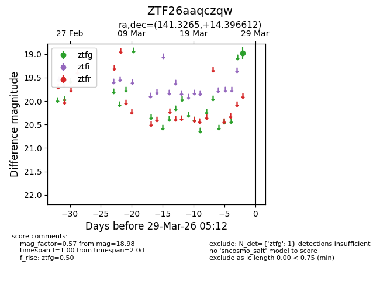
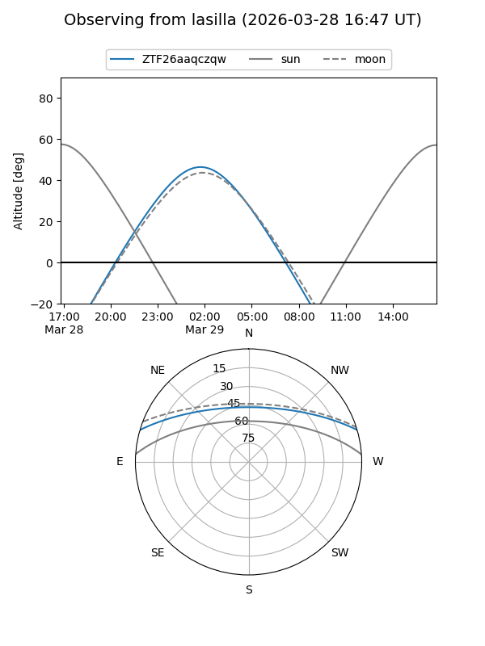
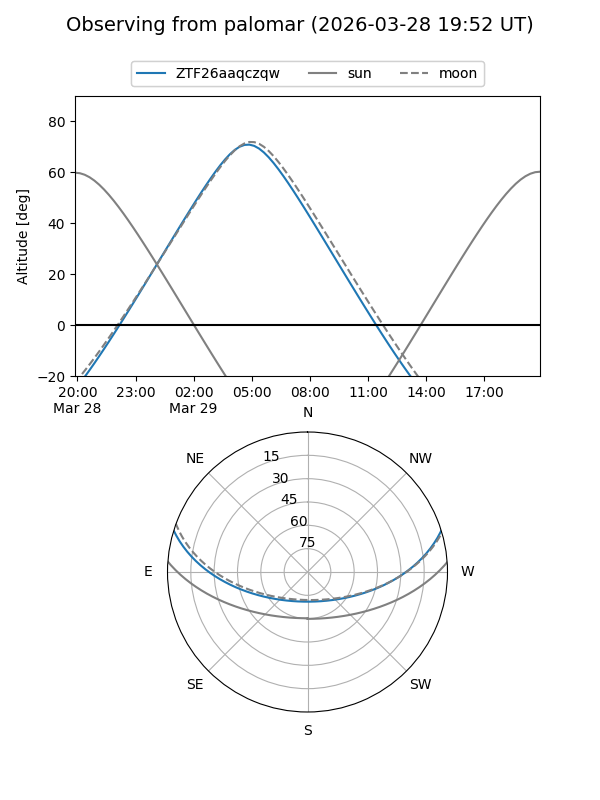

ZTF26aaqczqw
Target ZTF26aaqczqw at 2026-03-29 05:15
Aliases and brokers:
FINK: link
Lasair: link
ALeRCE: link
alt names
ZTF26aaqczqw (ztf,fink_ztf)
Coordinates:
equatorial (ra, dec) = 141.3265,+14.39661
equatorial (HMS+DMS) = 09:25:18.36,+14:23:47.80
galactic (l, b) = (216.9645,+40.51271)
Flags:
Photometry:
last ztfg=18.98
1 ztfg detections
Lightcurve

Visibility


Additional plots